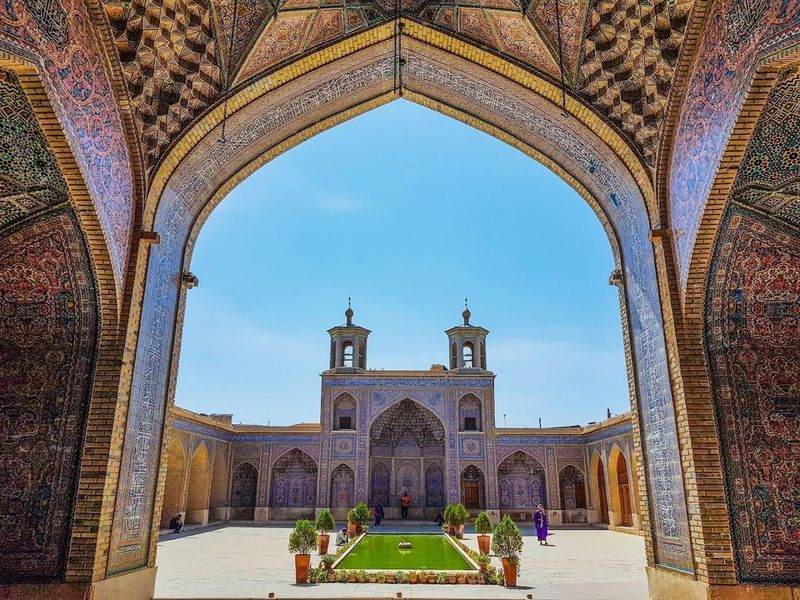
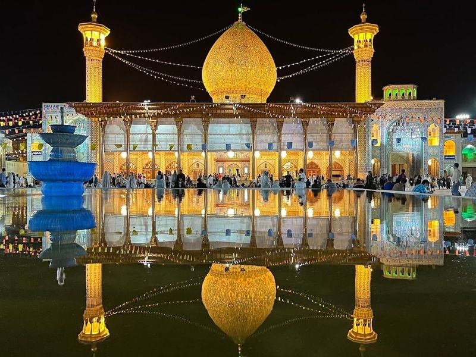
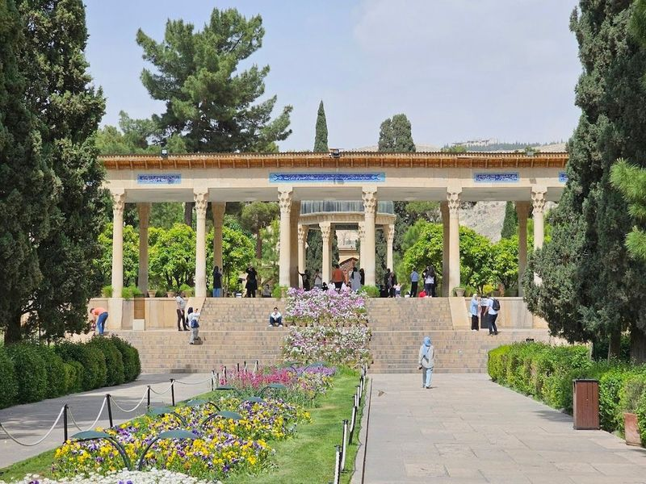
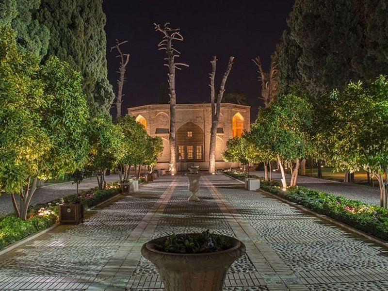
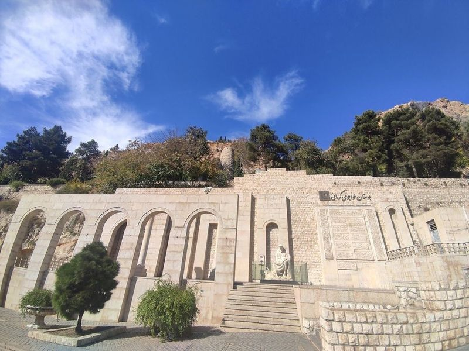
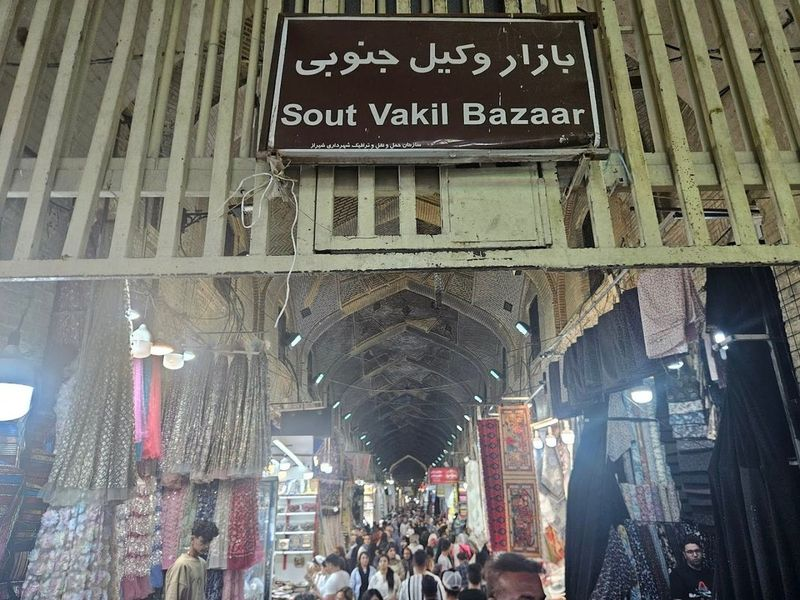
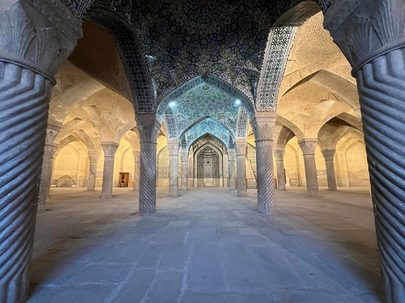
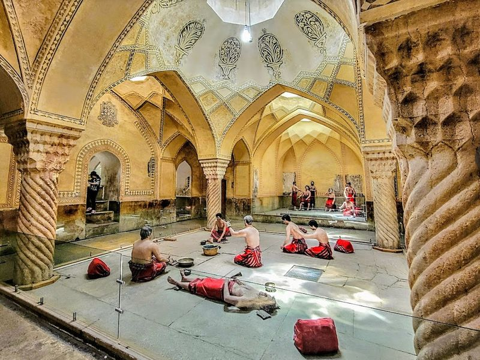
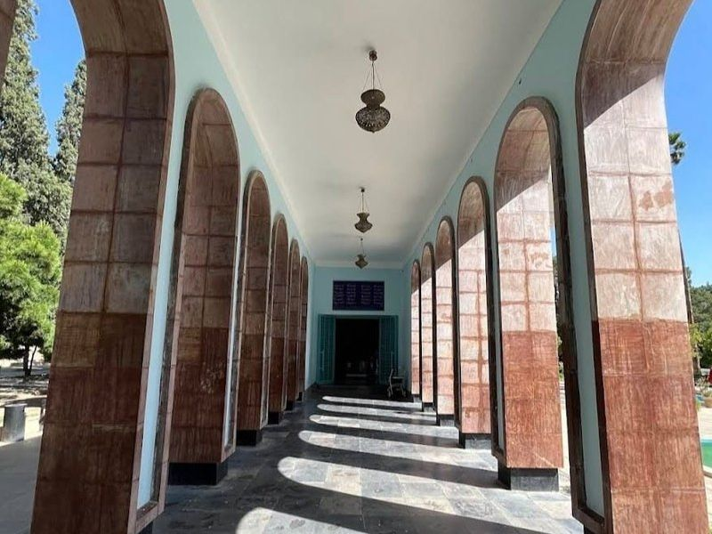
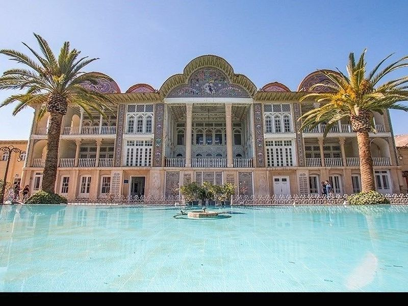

Explore Shiraz
A Brief History
Shiraz was a literary and garden city under successive Persian dynasties, associated with poets Hafez and Saadi. Nasir al-Mulk Mosque, Vakil Bazaar, and nearby Persepolis gateways record Achaemenid imperial memory and later Islamic civic patronage in Fars province. Eram Garden walkways and Hafez tomb pavilions extend poetic pilgrimage routes through Fars province.
Attractions Map
Top Sights & Activities

Nasir al-Mulk Mosque
Nasir al-Mulk Mosque, also known as the Pink Mosque, is a 19th-century architectural marvel located in Shiraz, Iran. The mosque's exterior is adorned with pink tiles, but it's the interior that truly captivates visitors. Completed in 1888 during the Qajar era, this small yet visited mosque boasts colorful stained-glass windows that create a mesmerizing play of light and shadow when sunlight filters through them.

Holy Shrine of Shahecheragh
The Holy Shrine of Shah Cheragh is a Shia Muslim mosque and mausoleum located in Shiraz, dating back to the 12th century. This sacred site is renowned for its mirrored tile work that adorns the ceiling, creating an ethereal atmosphere. It serves as a pilgrimage destination housing the tombs of Ahmad and Muhammad, brothers of Imam Reza.

Mausoleum of Hafez
The Tomb of Hafez, also known as Aramgah-e Hafiz, is the final resting place of the renowned Persian poet Hafez. The site features a striking pavilion and memorial hall set within a beautiful garden. Hafez, who lived in the 14th century, was famous for his romantic poetry infused with Sufi mysticism. Visitors can still witness dervishes gathering at this sacred site on Wednesdays and Thursdays.

Jahan Nama Garden
Nestled in the heart of Shiraz, Jahan Nama Garden is a historic gem that transports visitors to a serene oasis filled with lush greenery and blooms. Spanning 2.8 hectares, this enchanting garden boasts an impressive 3500 square meters of verdant space adorned with ancient cypress and orange trees, alongside colorful flowers like pink roses and petunias.

Quran Gate
Quran Gate, situated in the northeast of Shiraz, is a historic landmark with significant cultural and religious importance. Originally built by Adud al-Dawla, it was later reconstructed to house handwritten copies of the Quran by Sultan Ibrahim Bin Shahrukh Gurekani. These copies, known as Hifdah-Man, were believed to bestow blessings upon travelers passing beneath the gate. Despite damage from earthquakes during the Qajar era, Mohammad Zaki Khan Nouri restored the gate.

Vakil Bazaar
Nestled in the heart of Shiraz, Vakil Bazaar stands as a testament to Iran's rich history and culture. This historical market, part of the Zand Complex from the 18th century, invites visitors to explore its spacious corridors filled with an array of goods. From exquisite Persian rugs and intricate handicrafts to aromatic spices and fresh produce, there's something for everyone.

Vakil Mosque
The Vakil Mosque, a gem of 18th-century architecture located in Shiraz, is a testament to the artistic brilliance of the Zand era, commissioned by Karim Khan Zand. This mosque features an awe-inspiring interior adorned with numerous pillars and intricate tilework that captivates every visitor. As you step inside, you're greeted by a grand courtyard and an expansive praying hall supported by around 48 majestic columns.

Vakil Historical Bath
Vakil Historical Bath, also known as Vakil Hammam, is a significant tourist attraction in Shiraz, Iran. Built in 1187 by Karim Khan Zand, this 18th-century public bathhouse features various sections such as the Sultans room, warm house, dressing room, and treasury. The most notable part is the Shah Nashin or Sultans room. Visitors can explore wax figures depicting people who would have used the bath in ancient times.

Mausoleum of Saadi
Nestled in the enchanting city of Shiraz, the Mausoleum of Saadi stands as a tribute to one of Persia's most cherished poets from the 13th century. Surrounded by beautifully manicured formal gardens, this serene site invites visitors to immerse themselves in its tranquil atmosphere. While it holds profound significance for Iranians, offering a glimpse into their rich literary heritage, tourists may find it less extraordinary compared to other attractions in Shiraz.

Eram Garden
Eram Garden, an 18th-century garden located in Shiraz, is adorned with tall cypress and palm trees, featuring a central ornamental pool and the Eram Palace. While the exact date of its construction remains unknown, historical accounts suggest its existence as far back as the Seljuk dynasty. The garden's magnificence has been documented since the Safavid era, with further enhancements during the Zand period under Karim Khan Zand.